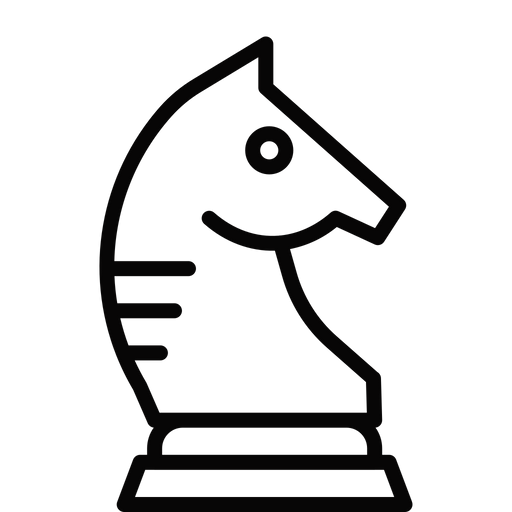
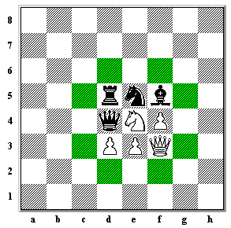

O cavalo se move em forma de L em qualquer direção. Podemos dizer que ele move dois quadrados para os lados e, em seguida, um quadrado para cima ou para baixo, ou dois quadrados para cima ou para baixo e, em seguida, um quadrado para os lados. O Cavalo muda a cor do quadrado em que está a cada movimento. Portanto, se começar em um quadrado de cor clara, quando terminar seu movimento, ele pousará em um quadrado de cor escura. Na imagem abaixo, o Cavalo pode mover-se para qualquer uma das casas vermelhas.

Assim como um cavalo de verdade, o Cavaleiro pode pular peças. Portanto, o Cavalo Branco pode se mover para qualquer uma das casas destacadas na imagem abaixo.

Na imagem abaixo, o Cavalo é capaz de pular sobre o peão em seu caminho e capturar o peão preto.